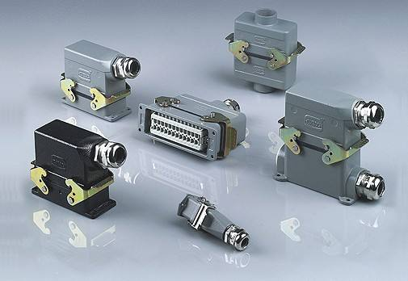

连接器究竟具备哪些优势呢？
2019-10-24
连接器在我们的生活领域，到处穿插着它的身影，或清晰或模糊。最清晰的体现便是机械上连接器的体现，两端有接口的仪器，起着连接作用。
连接器的种种优势，让它在生活中的应用领域不断扩展，也展现了不一样的作用，为我们的生活带来的便利，也是不可低估的，那么连接器究竟具备哪些优势呢？

首先，连接器的桥梁作用和它的便捷性。连接器的连接作用，改变了全局的过大空间的间隔劣势，连接了大空间的结合，从而实现了立体面之间的连接，实现平面的统一，这是插接件较大的优势，简小、方便。
其次，连接器简小、精悍，一旦发现有连接问题，其便于维修和更换；并且连接器的升级速度快，可以实现内部元件的整修和替换，这对于整个工程的成本节约和安全保证，有了更加重要的意义。再次，便于维修和升级速度快。
最后，连接器的设计灵活，也是我们选择它的主要标准之一，连接器的设计精小、易安装、容易拆除，并且保证了它的安全性和完整性，这深刻体现了浓缩就是精华的经典理论。
所以，连接器作为一种机电元件在我们生活中发挥着巨大的作用，提供连接系统、子系统或组件的桥梁，传输信号或能量，是电气电子产品不可或缺的产品，实现了此岸与彼岸的结合，像一座桥梁，撑起了整个路面的畅通无阻。
上一篇：如何选择适合自己的连接器?...
下一篇：连接器在现实生活的应用...